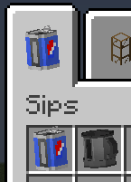
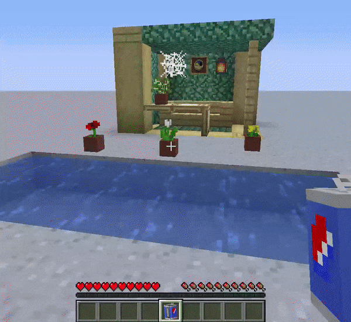
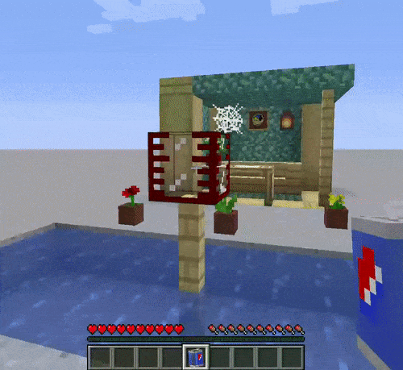
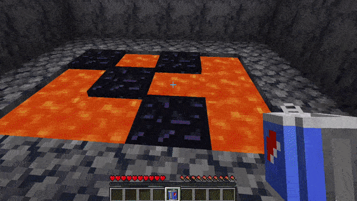
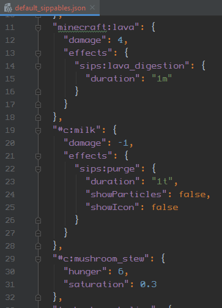
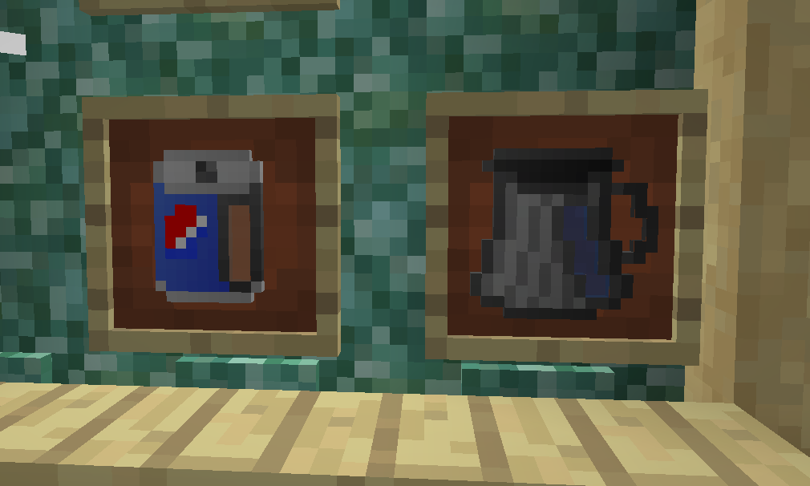
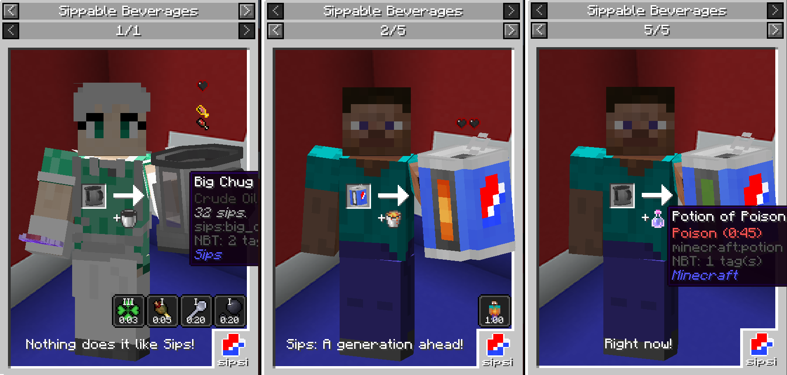

Yoghurt4C: This mod adds 2 items: Lil Sip and Big Chug, which are functionally identical, with the only difference being the amount of Fluid they can hold.

Yoghurt4C: Let's use a Lil Sip as an example. To fill it, grab it in your main hand and click on any fluid block.

Yoghurt4C: You can also empty and fill Sips to/from any Lib Block Attributes-compatible containers, such as Simple Pipes tanks.

Yoghurt4C: Once you have a fluid inside your Lil Sip, you can take a Sip from it! If your beverage of choice has a Sippable associated with it, you should receive a new effect!

Yoghurt4C: Sips also adds some "new" fluids to the game, like Milk and Mushroom Stew. You can get them from their respective Cow, or shift click a Milk Bucket or a bowl of Mushroom Stew in the world, or on an LBA fluid container! Of course, their default Sippables are virtually identical to those items.
Yoghurt4C: You may be wondering: "What are Sippables? How do I add my own effects to a fluid?". Sippables are collections of various data applied to the player on each Sip, and they're also entirely data-driven! Define your own Sip effects for fluids in JSON! Sips also has builtin compatibility for some modded fluids, from mods such as TechReborn, Astromine and Modern Industrialization!

Yoghurt4C: Sips also has a config, which lets you change some of the things about the mod. For example, you can increase the maximum amount of Sips that Lil Sip and Big Chug can hold, or turn off "fancy" 3D Sip rendering for that classic look! Or, if you're a modpack maker, you can prevent the default Sippables from loading!

Yoghurt4C: If you have REI installed, you will be able to view details about every drinkable fluid in the game in this beverage list designed to catch your attention! You will be gripped by the legally distinct complimentary slogans! Yes, you can also fill Sips with potions! (Currently LBA-exclusive.)

Yoghurt4C: Seeing this image means you've reached the end of this small showcase. Good job. So, get merry and have a Sip!